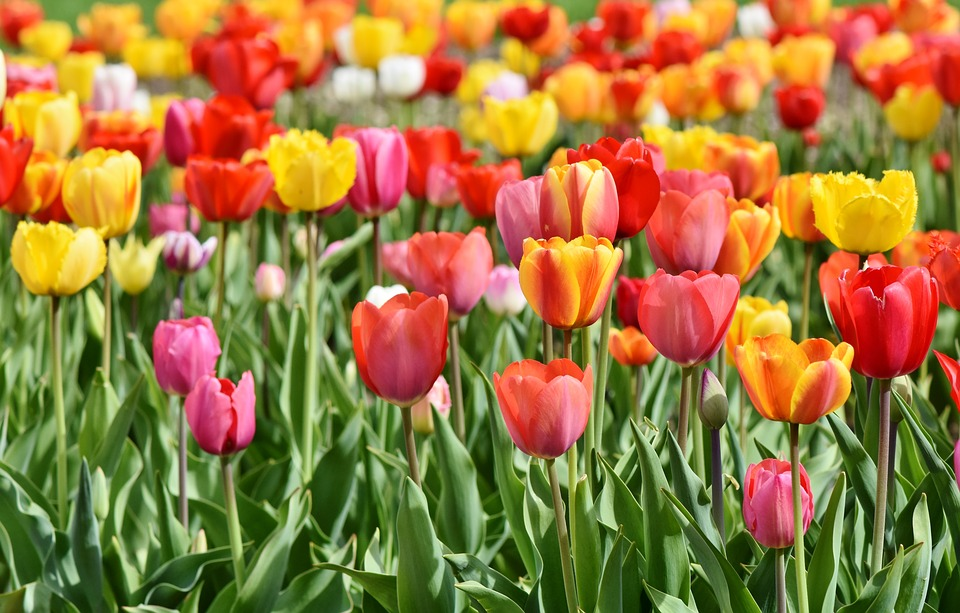

チューリップ

童謡にも出てくるように様々な色合いがあり、とても可愛らしいイメージがありますよね。
チューリップの花言葉は、「思いやり」です。しかし、色によっても花言葉を持っています。
- 赤・・・「愛の告白」「真実の愛」
- ピンク・・・「愛の芽生え」「誠実な愛」
- 黄色・・・「望みのない恋」「名声」
- 白・・・「失われた愛」
- 紫・・・「不滅の愛」
童謡にも出てくるように様々な色合いがあり、とても可愛らしいイメージがありますよね。
チューリップの花言葉は、「思いやり」です。しかし、色によっても花言葉を持っています。